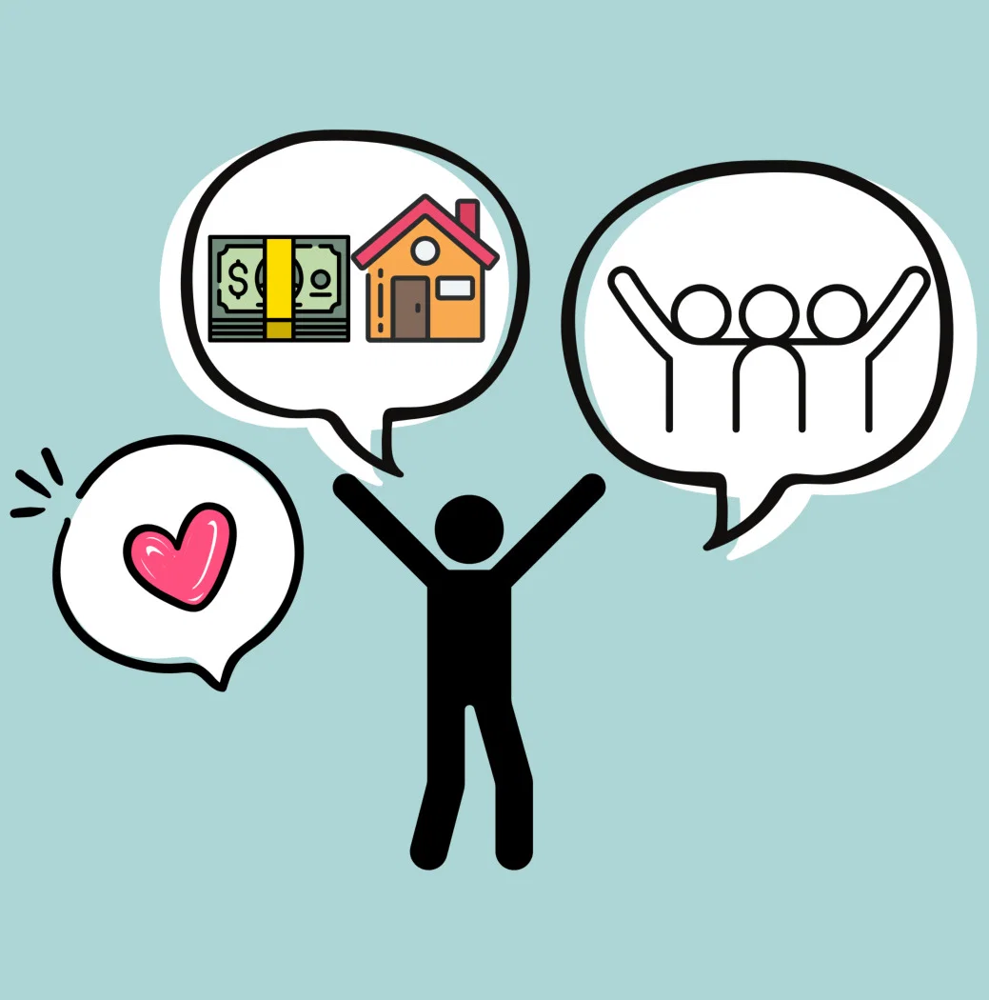

Desarrollo Académico
Concretar la formación secundaria y continuar estudios superiores amplía las oportunidades de crecimiento en el ámbito profesional e independiente.

Diseñar metas personales a mediano y largo plazo nos da una hoja de ruta clara para orientar nuestros esfuerzos académicos. Pensar en la profesión o emprendimiento a lograr impulsa a ser perseverantes.
Tomar decisiones informadas hoy evita interrupciones en la trayectoria estudiantil. Mantener el enfoque en los objetivos futuros garantiza un progreso constante.

Reflexionar antes de actuar es clave para evaluar las consecuencias de nuestras decisiones en la salud física y emocional. Ser independientes implica responder con sentido de responsabilidad.
El análisis de cada paso ayuda a prevenir riesgos innecesarios y a consolidar la autonomía personal requerida para afrontar la vida adulta con éxito.
Concretar la formación secundaria y continuar estudios superiores amplía las oportunidades de crecimiento en el ámbito profesional e independiente.

Asumir las consecuencias de las propias decisiones fortalece la confianza individual para alcanzar las metas trazadas para el futuro.